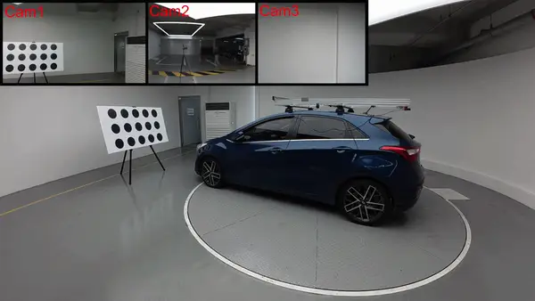
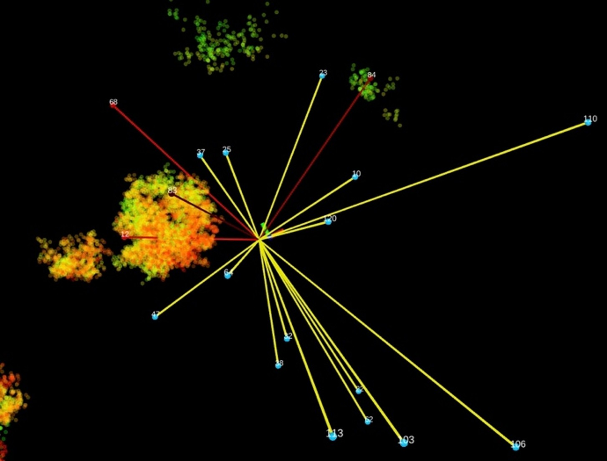
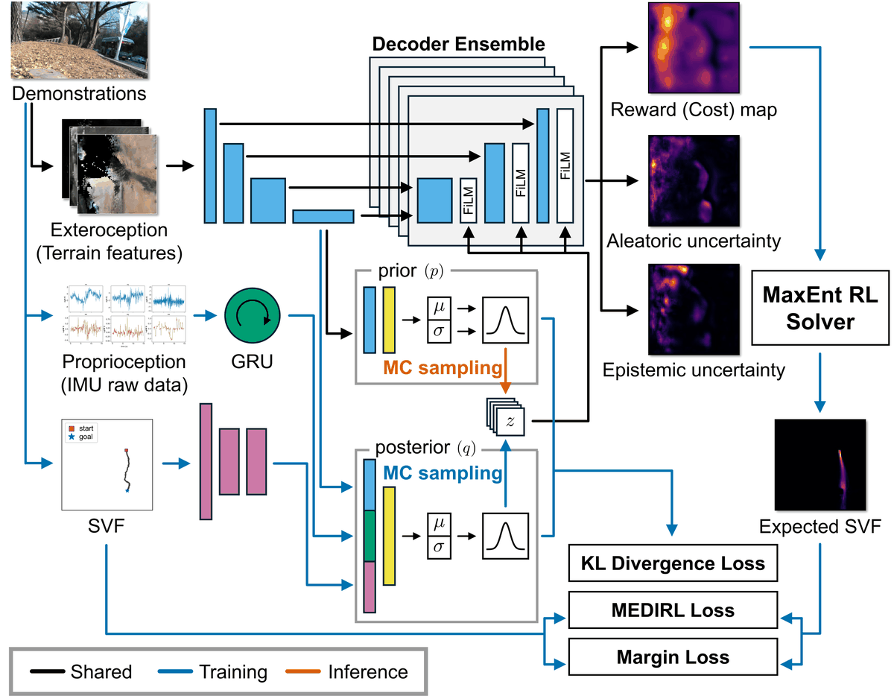

Calousel: Extrinsic Calibration of Non-overlapping Multi-camera Systems from Pure Rotation
IEEE/RSJ International Conference on Intelligent Robots and Systems (IROS), 2026
[arXiv] [Code] [Project Page] [Video]
I am an M.S./Ph.D. student in Mechanical Engineering at Seoul National University and a member of the RPM Robotics Lab, advised by Prof. Ayoung Kim.
My research interests lie in robot perception, sensor calibration, 6D object pose estimation, and robot manipulation.

IEEE/RSJ International Conference on Intelligent Robots and Systems (IROS), 2026
[arXiv] [Code] [Project Page] [Video]

Journal of Korea Robotics Society (JKROS), vol. 18, no. 1, pp. 72–81, 2023
[Paper]

Late Breaking Results, IEEE International Conference on Robotics and Automation (ICRA), Vienna, Austria, 2026